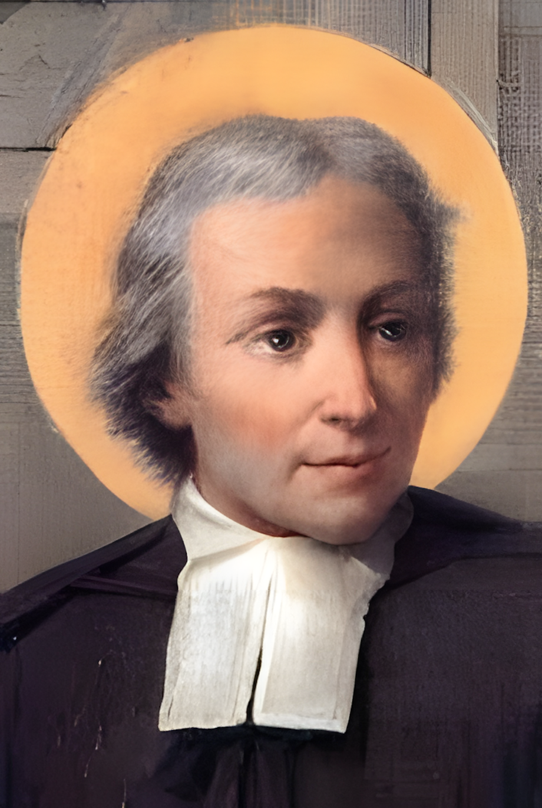

A Legacy of Faith, Excellence, and Service Since 1958
Adama Saint Joseph Catholic School was founded in 1958 by Bishop Urbain Person. Located in Adama (formerly Nazareth), approximately 100 kilometers southeast of Addis Ababa, the school began humbly in rented facilities with just two classrooms and 15 students.
The first teachers were Sister Haregewoin, Sister Marken, and Sister Madlin Minda, brought in by the Bishop due to a shortage of qualified local teachers. In 1959 E.C., Sister Colette Alis, a member of the Franciscan Missionaries of Our Lady (FMOL) from France, was appointed to oversee the school's administration. To address teacher shortages, part-time instructors from Atse Glaudious School were also engaged.
During the Imperial regime, favorable conditions allowed foreign missionaries to actively participate in educational initiatives. Bishop Person purchased land for the school's permanent site. The Capuchin Brothers, particularly Brother Simon and Brother Rizie, designed and supervised construction, with Sisters contributing as daily laborers.
By 1961 E.C., the school relocated to its current compound and began offering classes up to Grade 3. Administration was entrusted to the Franciscan Missionaries of Our Lady (FMOL), who managed the school from 1961 to 1978 E.C. In 1963 E.C., the Consolata Sisters transferred administrative responsibility to the Nazareth Sisters.
The Derg regime brought numerous difficulties, including internal labor unrest over salary concerns. Sister Patricia Kenny, an Irish national serving as headmistress, was compelled to return to Ireland due to illness during this turbulent period. Despite these challenges, the school managed to endure and maintain its mission.
From 1979 to 1983 E.C., the school was administered by the Consolata Fathers. In 1984 E.C., leadership was assumed by the De La Salle Christian Brothers, marking a new era of stability, growth, and academic excellence.
The Christian Brothers have since played a pivotal role in strengthening the school's academic and moral formation programs. Full ownership of the institution was formally transferred to the Brothers in 2014.
Today, Adama Saint Joseph Catholic School educates 2,870 students (1,285 male and 1,583 female) from kindergarten through Grade 12. With 94 teachers (53 male, 41 female) and support staff, the total number of employees reaches 150.
Each year, most graduates qualify for admission to public universities. Due to the school's reputation for discipline and academic excellence, it receives over 700 applications annually for approximately 200 available places.
Headmasters of Saint Joseph Catholic School (1958–Present)
To be a model Catholic school recognized for delivering quality, transformative, and holistic education, excelling locally and beyond.
Rooted in the Catholic and Lasallian tradition, St. Joseph Catholic School, Adama, is committed to serving students of all backgrounds by providing excellent secular and moral education that nurtures faith, character, and academic excellence.
Founded in 1958 by Bishop Urbain Person, we have grown from 2 classrooms and 15 students to over 2,870 students today. Rooted in the De La Salle tradition since 1984 E.C.
Over 700 applications annually for 200 available places. 94 dedicated teachers serving students from KG to Grade 12, with a reputation for discipline and academic excellence nationwide.
Placing trust and confidence in God in all endeavors.
Fostering collaboration, inclusivity, and care.
Serving others with dedication and compassion.
Honoring the dignity of every individual.
Striving for personal and institutional growth.
Pursuing high standards in academic, moral, and co-curricular development.
The current administration is focused on expanding student enrollment while strengthening the quality of teaching and learning. Priority actions include achieving an optimal student–teacher ratio of 1:40 and recruiting additional qualified educators across all divisions.
The School will operate under a revised organizational structure across two campuses, with academic and administrative functions organized into three divisions: Kindergarten, Elementary, and High School. Instruction will be delivered in Amharic, Oromiffa, and English.
Two dedicated Technology Centers will be established—one for Elementary and one for High School—along with audio-visual rooms, language laboratories, and other technology-enabled learning facilities.